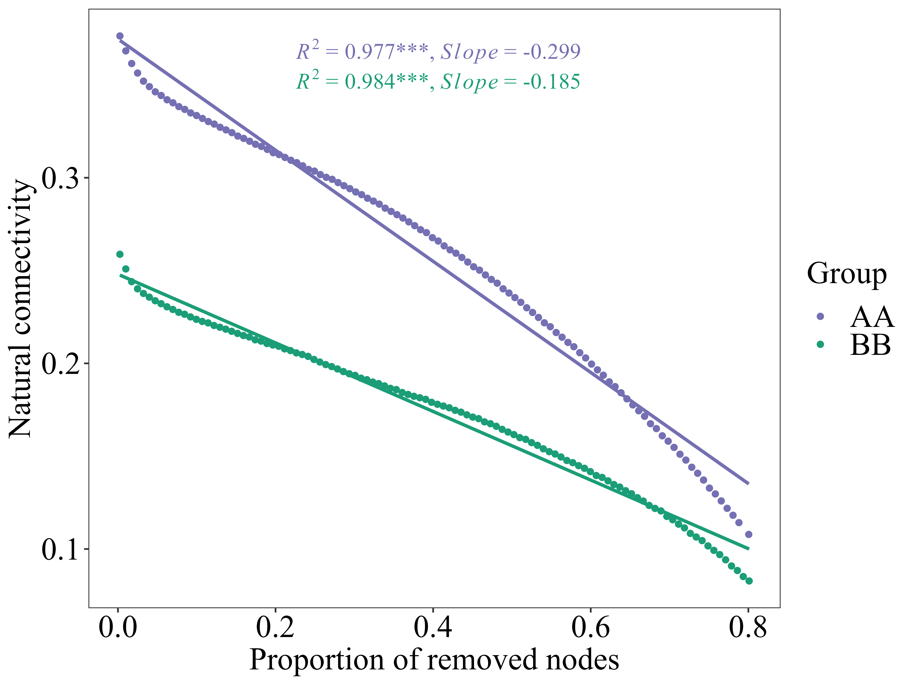

最后用R绘图：
library(ggpmisc)
grp1 <- read.csv("NC/AA_res.txt",header = T,sep="\t")
grp1$grp <- "AA"
grp2 <- read.csv("NC/BB_res.txt",header = T,sep="\t")
grp2$grp <- "BB"
####将每组合并
grpnc <- rbind(grp1,grp2)
##指定图例的顺序
grpnc$grp <- factor(grpnc$grp,levels = c("AA","BB"))
ggplot(grpnc, aes(del_number, nc_index,color=grp)) +##grp为将多个网络图合并时的分组
geom_point() +
geom_smooth(formula = y~x,se = FALSE,method = "lm",show.legend = F)+
stat_poly_eq(formula = y~x,size=5,family="serif",method = "lm",
output.type = "numeric",
parse = T,label.x = 0.3,hjust=0,
mapping =aes(label = paste("italic(R)^2~`=`","~",sprintf("\"%#.*f\"",3,after_stat(`r.squared`)),"*\"\"*",
ifelse(after_stat(`p.value`)<=0.001,"'***'",
ifelse(after_stat(`p.value`)<=0.01,"'**'",
ifelse(after_stat(`p.value`)<=0.05,"'*'",NA))),"*\", \"*",
"italic(Slope)~`=`","~",sprintf("\"%#.*f\"",3,after_stat(b_1)),sep = "")))+
labs(x="Proportion of removed nodes",
y="Natural connectivity",
color="Group")+
scale_color_manual(values = c("AA"="#7570B3","BB"="#1B9E77"))+
theme_bw()+theme(panel.grid = element_blank())+
theme(axis.title = element_text(size = 20,colour = "black"))+
theme(axis.text = element_text(colour = "black",size = 20,angle = 0,vjust = 0.5))+
theme(legend.title = element_text(size = 20,colour = "black"),
legend.text = element_text(size = 20,colour = "black"),
strip.text = element_text(size = 20,colour = "black"),
text = element_text(family = "serif"))
##将结果导出
ggsave("nc.pdf",width = 8,height = 6)
ggsave("nc.tiff",width = 8,height = 6)
 从上图可知，AA组自然连通度下降趋势快于BB组。